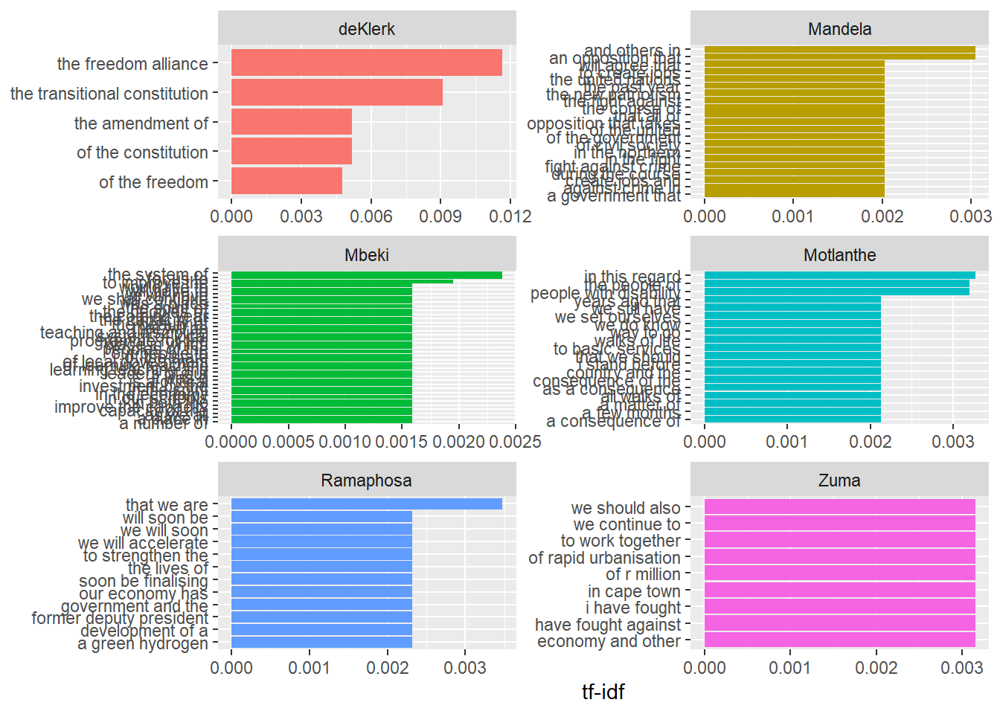
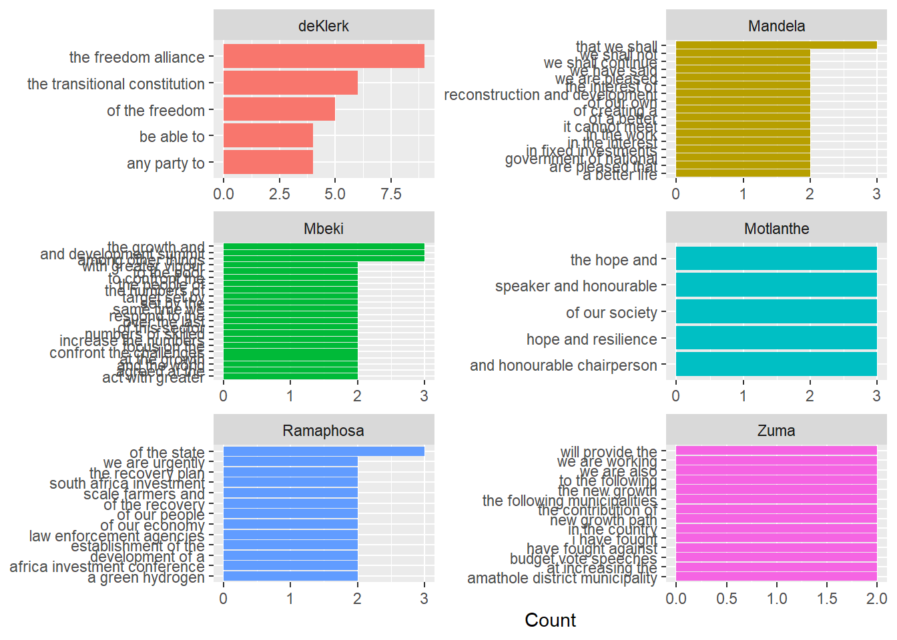

# A tibble: 36 × 5
filename speech year president date
<chr> <chr> <chr> <fct> <chr>
1 1994_post_elections_Mandela.txt "Madame Speaker and De… 1994 Mandela 24-0…
2 1994_pre_elections_deKlerk.txt "Mr Speaker This Parl… 1994 deKlerk 28-0…
3 1995_Mandela.txt "Honourable President … 1995 Mandela 17-0…
4 1996_Mandela.txt "Honourable President … 1996 Mandela 9-02…
5 1997_Mandela.txt "Madame Speaker and De… 1997 Mandela 7-02…
6 1998_Mandela.txt "Madame Speaker and De… 1998 Mandela 6-02…
7 1999_post_elections_Mandela.txt "Madames Speaker and D… 1999 Mandela 25-0…
8 1999_pre_elections_Mandela.txt "Madame Speaker and De… 1999 Mandela 5-02…
9 2000_Mbeki.txt "Madame Speaker and De… 2000 Mbeki 4-02…
10 2001_Mbeki.txt "Madame Speaker and De… 2001 Mbeki 9-02…
# ℹ 26 more rowsPredict the President
Abstract
Introduction and Literature Review
South Africa’s State of the Nation Address (SONA) is an annual event where the president of the country gives a report on the status of the nation. This purpose of this study is to create a classification task that identifies which president was the source of a given sentence.
Look out for speaker disfluencies, such things may be able to aid in the identification of speech
Data and Methodology
The data used in this study was sourced from . The 1994 to 2023 SONA speeches are used within this study. The presidents who were present in this time span were FW De Klerk, Nelson Mandela, Thabo Mbeki, Kgalema Motlanthe, Jacob Zuma and Cyril Ramaphosa.
Webscraping was used to collect this data. The speeches for each SONA was saved in a textfile.
The idea here is that each president should be represented equally in their training and validation. It is not neccessary to concern oneself with the equality of representation in the test set. For this reason, it would make sense to extract a sample of the same size for each president, regardless of how many speeches they’ve done.
Another thing to try is to simply remove the outliers Mothlale and deKlerk as they each only provided one speech. It is possible that looking into such characters may in fact skew the nature of this report in the predicting ability of the models.
Another method is to look into inversely proportional. This is almost the same idea as having equal representations.
Let’s train the data on a sample of 1000 for each president and see how it fairs. Howver, I do know that these 1000 samples cannot feature the opening statements because they all say the openning statements
Lemmatization
It may be necessary to perform lemmatization as commonly appearing words may appear in different forms for each president. So changing something like running to run may be necessary in finding commonly occuring words for example.
Unfortunately, for this data split, even for unigrams, we see very small frequencies even for words that are specific to one journal. This may mean that we will have to look at a different way to obtain an inverse weighted distribution of samples.
deKlerk Mandela Mbeki Motlanthe Ramaphosa Zuma
97 1665 2422 266 2288 2648
deKlerk Mandela Mbeki Motlanthe Ramaphosa Zuma
70 70 70 70 70 70 The word counts are helpful indicator of commonly occuring words, however, in this dataset, many of the presidents start their speeches similarly. They also have repetitive speech and points of order. It is therefore worthwhile to use the tf-idf weigthed counts instead of the frequencies of each word to find frequently occuring words. The TF-IDF finds the frequently occuring words for a particular document.
# A tibble: 6 × 2
president total
<fct> <int>
1 deKlerk 1531
2 Mandela 1832
3 Mbeki 2211
4 Motlanthe 1728
5 Ramaphosa 1562
6 Zuma 1350

For the bigrams below, we see very useless words come into play that could be used to characterise presidents, it may be useful to consider removing stop words to improve the goodness of this study. However, these minute differences may be just a manner of speaking for some of these presidents and as such are necessary to the text. Like it could be a personality trait specific to that president.
We see below the usage of words that are not really useful to our analysis like, “last year”, this appears for 3 different presidents. Maybe remove this in a user-defined stop word dictionary.
# A tibble: 6 × 2
president total
<fct> <int>
1 deKlerk 1461
2 Mandela 1762
3 Mbeki 2141
4 Motlanthe 1658
5 Ramaphosa 1492
6 Zuma 1281

What we can see below is that a pentagram is not exactly useful in distiguishing different presidents. We see that there are some commonly occuring phrases. But these happen a total of 3 to 5 times out of over 30 000 entries for some presidents. Therefore it is not necessary to go this far.


A trigram in this instance is as far as I would recommend looking. Although, it is still not very stable.


EDA
Naive Bayes Classifier
Feed Forward Neural Networks
Support Vector Machines
Results
Discussion
Limitations
A limitation that arises in this study is a lack of candidate authors, as well as minimal data provided for some authors. This is an issue that has been detailed in research before (Stamatatos (2009)).
Conclusion
Bibliography
Stamatatos, Efstathios. 2009. “A Survey of Modern Authorship Attribution Methods.” Journal of the American Society for Information Science and Technology 60 (3): 538–56. https://doi.org/https://doi.org/10.1002/asi.21001.